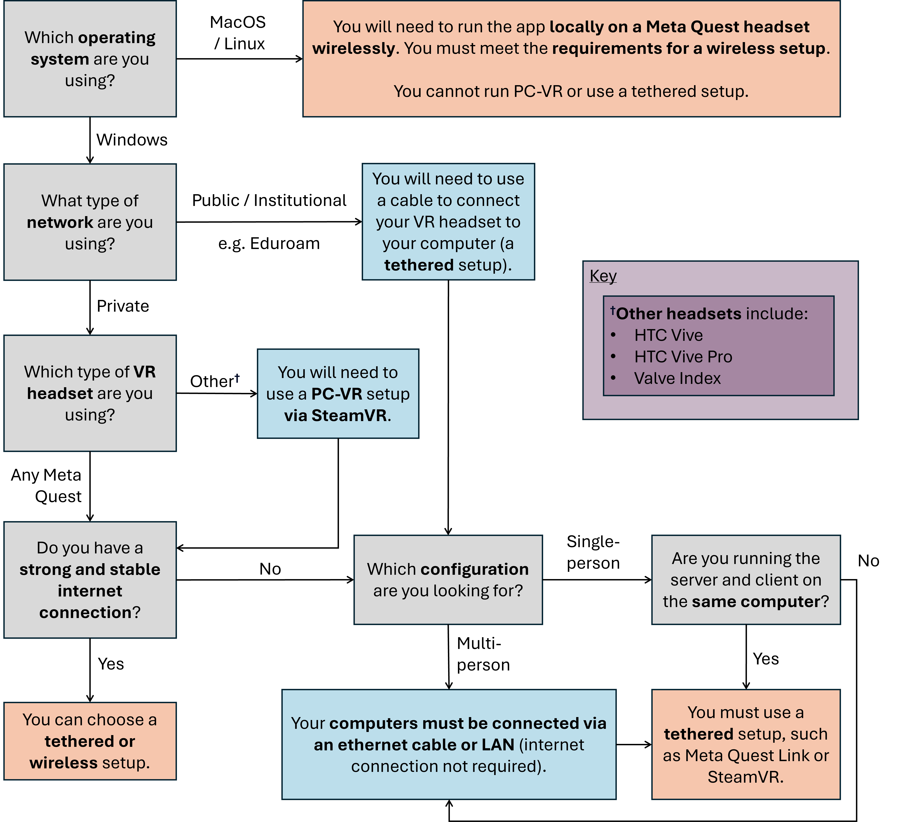

Installation & Getting Started
NanoVer consists of two components: the python-based libraries for running simulations, and the Unity3D libraries and applications for visualising & interacting with simulations in VR.
User Installation Guide
This guide contains the information required to get NanoVer up and running on your computer! This includes creating a conda environment and installing the server, which is required for setting up and running simulations. You then have the option to install the iMD-VR client, which you can use for visualising and interacting with your simulations inside VR.
Creating a conda environment
Install conda through whichever program you prefer, e.g. Miniforge.
Open a terminal that you have conda installed in:
On Windows, this is Windows Powershell.
On Mac and Linux, this is the terminal.
Create a conda environment (here we call the environment “nanover”):
conda create -n nanover "python>3.11"
Installing the server
If you have not already set up a NanoVer conda environment, please refer to Creating a conda environment.
Activate your NanoVer conda environment:
conda activate nanover
Install the NanoVer packages:
conda install -c irl -c conda-forge nanover-server
For information on how to run NanoVer servers, check out the tutorials.
Choosing your setup for the iMD-VR client
If you wish to visualise and interact with your simulations in VR, you will need to install an iMD-VR client. Below is a flow diagram to help you decide which setup to use.
{kind=link}
Using PC-VR
In this case, you have two options for running the VR client:
Downloading the latest release of the NanoVer iMD executable. This is a quick and easy option for those unfamiliar with conda, see Download the latest release.
Conda installation of the NanoVer iMD package. This is a good option if you are familiar with conda (or want to learn how to use it!), see Conda installation.
Both options are compatible with any of the following:
Meta Quest Link (tethered)
Meta Quest AirLink (wireless*)
SteamVR (tethered)
Steam Link (wireless*)
*Note that for a wireless setup you will need to meet the requirements for a Wi-Fi setup (see the key in the flow diagram above).
Running locally on a Meta Quest headset
In this case, you have one option:
Downloading the latest release of the NanoVer iMD apk and installing this on your headset, see Download the latest release.
Note that for a wireless setup you will need to meet the requirements for a Wi-Fi setup (see the key in the flow diagram above).
Installing the iMD-VR client
Important note: VR is developing fast and there are constantly new features/apps/ways of doing things. Therefore, these instructions may not be an exhaustive list of all the possible VR setups. Please feel free to choose whichever one you are most comfortable with! We also recommend checking out the online documentation for your VR headset if you run into any problems relating to setting up your VR kit.
Download the latest release
Download the latest release of NanoVer iMD.
Extract the downloaded zip file.
The next steps depend on how you want to run the program:
- Using PC-VR:
Navigate to the
windowsdirectory in the extracted folder, and launchNanoVer iMD.exe.The first time you run this, Windows will likely prompt you with a warning about the executable not being signed. If this happens, click on the “More info” button, then “Run anyway”. You will also likely be prompted by the Windows firewall, allow NanoVer to access the network.
- Running locally on a Meta Quest headset (wireless):
Ensure that you have developer mode enabled on your headset (search online for up-to-date instructions).
Connect your headset to your computer with a cable and sideload the
nanover-imd.apkfrom the extracted zip file onto your device. You can use SideQuest or the Meta Quest Developer Hub for this.Look in the
Unknown Sourcessection of your apps list inside your headset and runNanoVer IMD.
- Running locally on a Meta Quest headset via the Meta Developer Hub (tethered):
You can also run the apk on the headset using a tethered setup. First, follow the above instructions for installing the apk on your headset.
Open the Meta Quest Developer Hub and go to the
Device Managermenu on the left sidebar.Look for the NanoverIMD app under
Apps. It should be calledcom.IntangibleRealitiesLaboratory.NanoVeriMD(hover over it with you cursor to see the full name).Click on the three dots (on the far right) for this app and select
Launch App.
Conda installation
If you have not already set up a NanoVer conda environment, please refer to Creating a conda environment.
Activate your NanoVer conda environment:
conda activate nanover
Install the NanoVer iMD package:
conda install -c irl nanover-imd
To start the program, run the command:
NanoveriMD
Developer Installation Guide
Developers will want to manually install from source.
If you want to create your own custom server, connect a different physics engine or create a custom client, you can do this via modification of the NanoVer protocol. To download and install the source code, please follow the developer installation instructions on the README of the nanover-protocol repository.
If you want to customise the NanoVer iMD Unity3D application, instructions for obtaining the source code are available in the nanover-imd repository on GitHub.
If you want to build your own VR application that interfaces with NanoVer, the NanoVer Unity3D libraries are available in the NanoverUnityPlugin repository on GitHub.